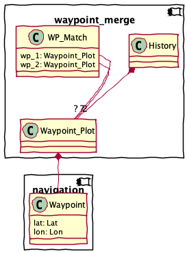

waypoint_merge – Waypoint and Route Merge Application¶
With multiple chart plotters, it’s very easy to have waypoints defined (or modified) separately. It’s necessary to reconcile the changes to arrive at a single, comprehensive list of waypoints that can be then distributed to all devices.
This requires reading and comparing GPX files to arrive at a master list of waypoints.
Similar analysis must be done for routes to accomodate changes.
Here’s the structure of this application

This module includes several groups of components.
The Input Parsing group is the functions and classes that acquire input from the GPX or CSV file.
The Processing functions work out range and bearing, magnetic bearing, total distance run, and elapsed time in minutes and hours.
The Output Writing group is the functions to write the CSV result.
Finally, the CLI components are used to build a proper command-line application.
Input Parsing¶
There are two kinds of inputs
GPX files. Each source has a unique logical layout imposed over a common physical format.
OpenCPN GPX. These tend to be richly detailed, using OpenCPN extensions.
Chartplotter GPX. These are minimal, skipping import details like GUID’s that provide unique identity to routes and waypoints.
USR files. Also called “Lowrance USR files.” These are a binary dump of chartplotter information.
Base Classes¶
Plotted image of a waypoint.
Input Processing¶
There are two formats observed:
2020-09-30T07:52:39Z2013-11-08T13:53:42-05:00
Todo
Refactor to merge with
analysis.parse_date()- Parameters
text – source text
- Returns
datetime.datetime
Generates
Waypoint_Plotonjects from an OpenCPN GPX doc.<wpt lat="37.184990000" lon="-76.422203000"> <time>2020-09-30T07:52:39Z</time> <name>Chisman Creek</name> <sym>anchor</sym> <type>WPT</type> <extensions> <opencpn:guid>34de7898-f37e-458c-8ccb-e4e03fa325ec</opencpn:guid> <opencpn:viz_name>1</opencpn:viz_name> <opencpn:arrival_radius>0.050</opencpn:arrival_radius> <opencpn:waypoint_range_rings visible="false" number="-1" step="-1" units="-1" colour="#FFFFFF" /> <opencpn:scale_min_max UseScale="false" ScaleMin="2147483646" ScaleMax="0" /> </extensions>
This uses a BUNCH of namespaces
xmlns="http://www.topografix.com/GPX/1/1"xmlns:xsi="http://www.w3.org/2001/XMLSchema-instance"xmlns:gpxx="http://www.garmin.com/xmlschemas/GpxExtensions/v3"xmlns:opencpn="http://www.opencpn.org"
- Parameters
source – an open XML file.
- Returns
An iterator over
LogEntryobjects.
Generates
Waypoint_Plotonjects from an Chartplotter GPX doc.<metadata> <time>2021-06-04T16:55:38Z</time> <depthunits>meters</depthunits> <tempunits>C</tempunits> <sogunits>m/s</sogunits> </metadata> <wpt lon="-80.22695124" lat="25.71541470" > <time>2017-05-28T19:15:52Z</time> <name>Coconut Grove</name> <sym>anchor</sym> </wpt>
This uses one namespace
xmlns="http://www.topografix.com/GPX/1/1"
- Parameters
source – an open XML file.
- Returns
An iterator over
LogEntryobjects.
USR Details
{'uuid': UUID('41f0e2b8-e631-462a-82fd-f5292523f98d'), 'UID_unit_number': 12988, 'UID_sequence_number': 328, 'waypt_stream_version': 2, 'waypt_name_length': 18, 'waypt_name': 'ALLIGTR C', 'UID_unit_number_2': 12988, 'longitude': -76.64669528, 'latitude': 24.38829583, 'flags': 4, 'icon_id': 0, 'color_id': 0, 'waypt_description_length': -1, 'waypt_description': '', 'alarm_radius': 0.0, 'waypt_creation_date': datetime.date(2017, 6, 11), 'waypt_creation_time': datetime.timedelta(seconds=36080, microseconds=754000), 'unknown_2': -1, 'depth': 0.0, 'LORAN_GRI': -1, 'LORAN_Tda': 0, 'LORAN_Tdb': 0}
- Parameters
source –
- Returns
Processing¶
This is part of a four-step use case.
Dump charplotter-unique waypoints. These are not on the computer, which is the single source of truth.
Merge the waypoints, loading OpenCPN. Make manual edits and updates to cleanup and simplify. Locate “to-be deleted” waypoints. These are duplicates (or near duplicates) that need to be merged and reconciled. Removing a waypoint can break routes, so route editing is part of this.
Dump chartplotter-unique routes (if any.) These are not on the computer, which is the single source of truth.
Merge the routes into OpenCPN. Make any manual edits.
Adjacency¶
While we can use loxodromic distance, this is a lot of computation.
Instead we use OLC. Using truncated OLC permits flexible adjacency via simple string-based processing. Less math.
Classes and Functions¶
The state of the matching operation. This allows us to track waypoints that have matches.
The match result. There are three states.
Both – they passed a comparison test
1 – From the first source (usually the computer) with no match
2 – From the second source (usually the chart plotter) with no match
Alias for field number 0
Alias for field number 1
Return a new dict which maps field names to their values.
Make a new WP_Match object from a sequence or iterable
Return a new WP_Match object replacing specified fields with new values
Summarize a pair of match histories as a single sequence of matches. There are three subtypes of matches.
Something was the same.
Only in the first history list.
Only in the second history list.
Output Writing¶
We use Jinja2 to write an XML-format file with the waypoints that need to be updated in OpenCPN.
Inject waypoint data into an XML template.
- Parameters
source – source of Waypoint_Plot instances.
- Returns
XML document as text.
CLI¶
A typical command looks like this:
python navtools/waypoint_merge.py -p data/WaypointsRoutesTracks.usr -c "data/2021 opencpn waypoints.gpx" --by name --by geocode
This produces a report comparing the .USR output from the chartplotter with the GPX data dumped from OpenCPN. Waypoints are compared by name for literal matches, then by Geogode for likely matches that have different names.
The output is a list of points that have been created or changed in the chartplotter, plus a less-interesting list of points that are only in the computer.
Report on a list of
WP_Matchinstances. This is a human-readable DIFF-like report.
Waypoint merge. Parses the command line options. Compares two files, and emits a report/summary or GPX.
Todo
parameterize the distance or geocode options.